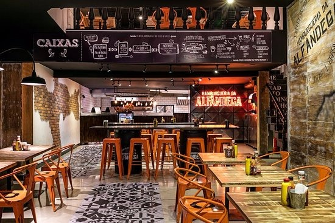

Sobre nós

Zaralho's Burguer foi fundada em abril de 2020 por Lucas Santos, Thiago Marinho, Gabriel e Zaroni com a
intenção de atender aqueles que buscam um hambúrguer artesanal saboroso e entrega rápida com o máximo
de atenciosidade possível. Em tempos de pandemia, o grupo se formou e idealizaram o que seria uma das
mais populares hambúrguerias da cidade.
Até então a ideia seria de atender somente via entregas
solicitadas em seu site, porém com o crescimento exponencial do negocio decidiram expandir e abriram uma
loja presencial, localizada na Tijuca. Desde então, a Zaralho's burguer permanece em constante
crescimento e inovando cada vez mais.